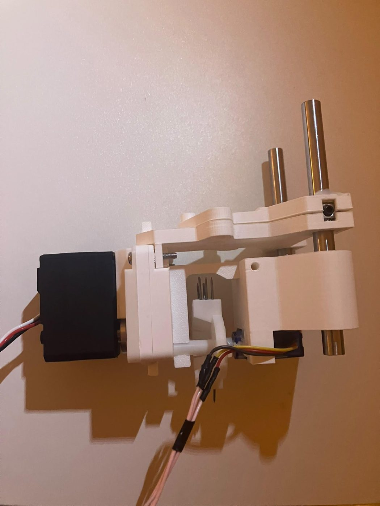
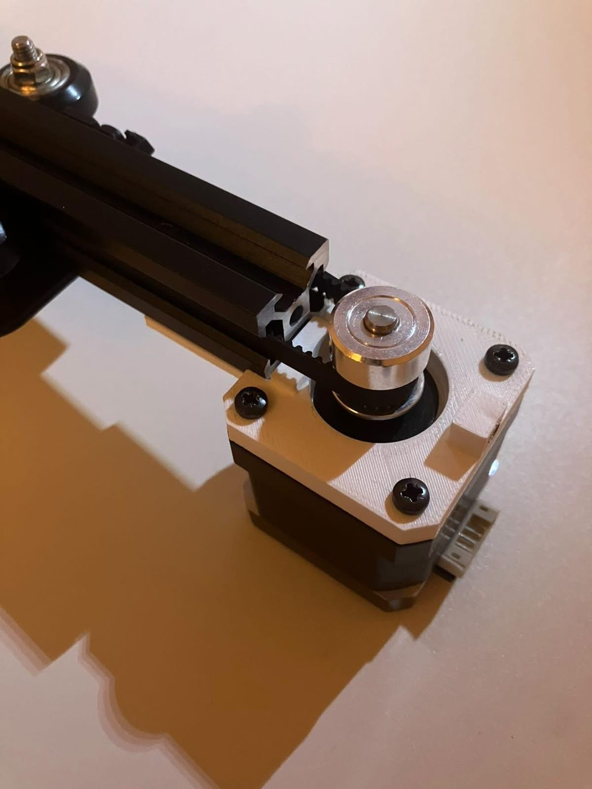
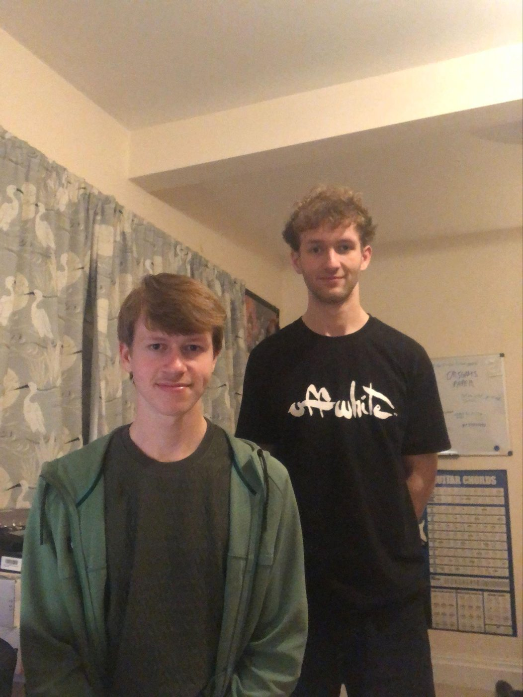

BrailleGo!
Accessible culture at your fingertips.
An affordable, portable Braille printer for short runs: menus, board agendas, worksheets and children’s books. Built from about £90 of parts, and open source so anyone can make one.

 Hunt Robotics’ entry to WRO 2026, Robots Meet Culture, Future Innovators (Senior)
Hunt Robotics’ entry to WRO 2026, Robots Meet Culture, Future Innovators (Senior)
Braille is still too expensive to print
The World Health Organization estimates at least 2.2 billion people live with a near or distance vision impairment. For many of them, Braille books, worksheets and everyday printed material are hard to find or too costly to make.
Even the cheapest automated Braille embossers cost £1,500 to £3,500, and school-grade machines run to several thousand more. That puts short, everyday prints out of reach for individuals, small schools and libraries, especially in poorer communities.
A Braille printer for everyone
BrailleGo! rethinks the printer around cost and simplicity. You type text on a phone or laptop, and a motorised pin-punch mechanism embosses it as Braille onto A4 or A5 paper.
It uses widely available parts and a 3D-printed frame, so it is cheap to build and easy to repair. It’s slower than an industrial embosser, and that is the trade-off: it is made for short runs, not whole books.
 Our grandfather was blind, and our mum has volunteered with the Royal National Institute of Blind People for many years. Braille users helped shape and test BrailleGo! at every stage.
Our grandfather was blind, and our mum has volunteered with the Royal National Institute of Blind People for many years. Braille users helped shape and test BrailleGo! at every stage.
How it works
Each Braille character is a cell of six dots in two columns of three. BrailleGo! embosses one column at a time.
-
Connect and type
The printer’s ESP32 runs its own Wi-Fi network called BrailleGo!. Join it from a phone or laptop and type into the web page.
-
Text becomes dots
The software converts each letter into a six-dot pattern, then splits it into a left and right column of three dots.
-
Move and select
A stepper motor drives a belt to move the print head along the rail. A small servo turns a daisywheel to pick the right pin pattern for the column.
-
Emboss
A stronger servo drives a rack and pinion that lowers the whole head, pressing up to three pins into the paper at once.
-
Next line
A second stepper turns the rollers to feed the paper on, so the printer can carry on to the next line.
The build
Two brothers, two halves: Tom designed the mechanics and Felix did the electronics and code. The final version is the third major redesign.






What’s inside
- ESP32
- Microcontroller with built-in Wi-Fi
- 2 × NEMA 17 steppers
- Move the print head and feed the paper
- 2 × DRV8825
- Stepper motor drivers
- SG90 servo
- Selects the pin pattern
- ST3215 servo + driver
- Provides the embossing force
- 0.96″ OLED
- Shows status messages
- 5V converter
- Steps 12V down for the servos and ESP32
- 12V barrel jack
- Powers everything from one plug
What it can print
The printer embosses whatever the software sends it, so with the right conversion tools it can produce:
- Grade 1 and Grade 2 (contracted) Braille
- Mathematical Braille
- Musical Braille
- Plain text files and BRF Braille files
Software features
A browser-based calibration wizard, settings saved across restarts, an emergency stop, a demo mode that moves without embossing, and serial controls as a fallback.
Where BrailleGo! fits
| Type | Example | Approximate cost | Made for |
|---|---|---|---|
| Industrial | Braillo 300 S2 | Tens of thousands of pounds | Books and newspapers at volume |
| Mid-range | Index Everest-D V5 | £3,000 to £4,000+ | Schools and large institutions |
| Desktop | Embraille, Braille Buddy | £1,500 to £3,500+ | Individuals and small offices |
| BrailleGo! | Open source | About £90 in parts, £250 target price | Short runs anywhere, by anyone |
Tested with a real use case
We piloted printing board agendas with a blind Braille user, who found switching between reports and agendas with assistive technology slow. She read our trial print easily and backed its value for meetings.
Built for places with less
Most people with sight loss live in developing countries. In Peru, for example, an affordable printer could make low-cost worksheets for schools and bring Braille to rural and underfunded regions.
What people say
The concept of an affordable, portable Braille printer for short-run needs is brilliant, and one I can imagine many uses for: board meeting agendas, menus, ad hoc office needs, children’s books and bedtime reading, to name a few.
BrailleGo! is a product that has the potential to significantly increase independence for vision impaired individuals globally.
To read and to write are fundamental to human life. Tom and Felix’s inexpensive machine brings the possibility of reading and writing in Braille to those regions of the world where poverty and blindness are endemic.
Build your own
BrailleGo! is open source. The repository has the 3D-print and CAD files, the ESP32 code, the circuit board design, a parts list and step-by-step build instructions.

Hunt Robotics
We’re Tom and Felix Hunt, two brothers from Leeds who love engineering and robotics. We built BrailleGo! for the World Robot Olympiad 2026, where the theme is Robots Meet Culture.
- Tom Hunt, 19
- Mechanical design: the frame, print head and every custom part
- Felix Hunt, 16
- Electronics and code: wiring, power, circuit board and firmware
- Simon Hunt
- Coach
What’s next
Faster printing with a micro stepper in place of the small servo, a punch mechanism that meets the full Braille specification, and a proper enclosure to protect the electronics.